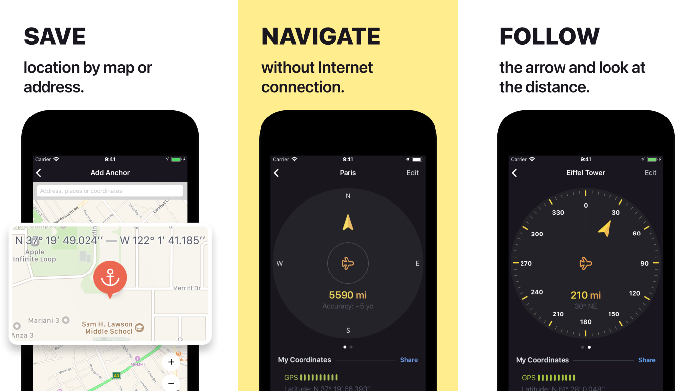
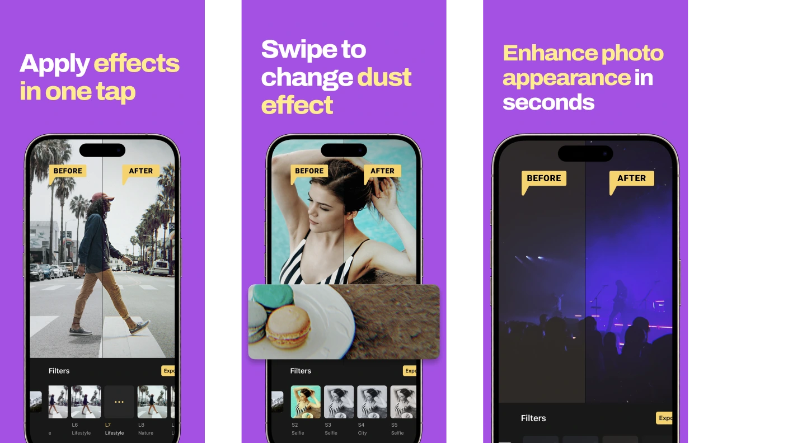

The Best Way to Create iOS Screenshots Titles
Oct 25, 2024 · Alexander Deplov
Inspired by that tweet, instead of saying “Here’s what our product can do” you can shift to “Here’s what you can do with our product”. This approach led me to rethink all the screenshots I’ve created in the past to make them more effective.

I realized I made another mistake by not considering that users often lack context. Here is a bad example:

- In the first screenshot, we see the large “SAVE” title.
- As a new user unfamiliar with the app, this title alone doesn’t tell me why I would want to SAVE or what I’m saving?
- There’s some supporting text that reads “save… location by map or address,” which is better, but it still describes app functionality. According to the tweet, we should focus on what the user can achieve. “Yeah, I can save location by map or address, but why I want to do that?”
Improved Version
An improved version of the title could be: “Never get lost again with GPS navigation”
Now the statement is clear. If [as a user] I will use the app, I will [never lost again], but why? Because of [GPS navigation]. The benefit is clear.
Only after text is done we can add graphical asset to support that text.
Another example. Before: 
After:

Screenshot 1:
- Before: “Apply effects in one tap” But why? Why I have to apply effects?
- After: “Select a filter to express your idea”. Why I have to select a filter? To express your idea.
Screenshot 2:
- Before: “Swipe to change dust effect”. Why I want to change dust effect anyway?
- After: “Add dust for a nostalgic vibe”. Now I see the benefit!
Pro Tips for Crafting Effective Screenshot Text
- Start with text first; don’t rely on screenshots initially. People usually read the text first anyway.
- Focus on benefits from the perspective of “Here’s what you can do with our product.”
- Assume the user has no context. Make each statement clear so the user doesn’t have to ask, “Why? Why would I need to do that?”